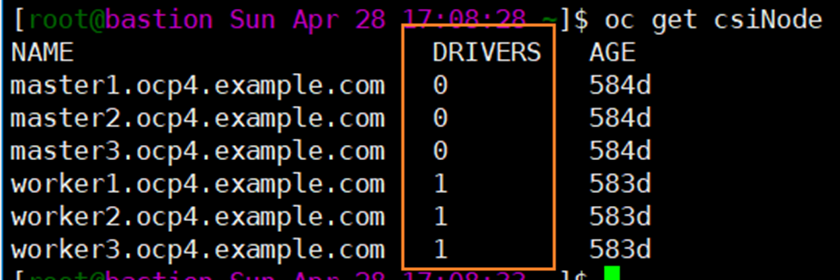
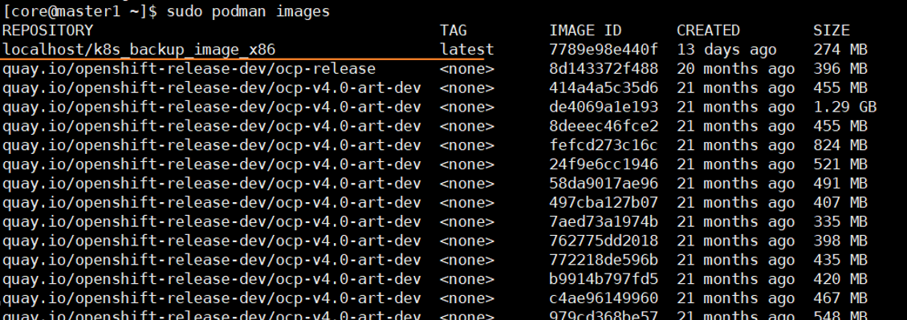

Prerequisites
Before uploading the Kubernetes image package, query the version on the product WebUI, download the XXX_X.X.X_K8s_BackupImage.tgz installation package based on the queried version, and decompress the installation package to obtain the k8s_backup_image_x86.tar or k8s_backup_image_arm64.tar image package. To obtain the installation package:
- For enterprise users: Click here.
- For carrier users: Click here.
 You can query the version in the following way:
You can query the version in the following way:- Click
 in the upper right corner and choose About.
in the upper right corner and choose About.In the dialog box that is displayed, the version is displayed in the line where Version is located.
- Click
Procedure
- Log in to the Kubernetes cluster in the background.
- Run the oc get csiNode command to check the nodes where the CSIDriver is installed. In the command output, the nodes whose DRIVERS value is not 0 are the worker nodes where the CSIDriver is installed.

- Upload the obtained image package to all worker nodes where the CSIDriver is installed.
- Log in to each worker node where the CSIDriver is installed. In the directory where the image package is stored, run the sudo podman load -i Image package name command to upload the image.
- After the upload is successful, run the sudo podman images command to view the image name and tag, which correspond to the values of the REPOSITORY and TAG parameters in the command output, respectively.
